Return To Catalogue - Hungary - Western Hungary (Lajtabansag)
Note: on my website many of the
pictures can not be seen! They are of course present in the
catalogue;
contact me if you want to purchase the catalogue.
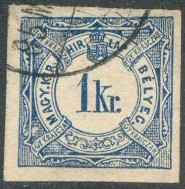


(stamp for military use, arms below)
1 Kr blue 1 Kr blue (for military use in Croatia, arms below) 2 Kr brown (text on top)
Value of the stamps |
|||
vc = very common c = common * = not so common ** = uncommon |
*** = very uncommon R = rare RR = very rare RRR = extremely rare |
||
| Value | Unused | Used | Remarks |
| 1 Kr | * | c | First type, with small 'K': * Second type, with large 'K': c (with two types of watermark) |
| 1 Kr | RRR | RRR | With large arms below |
| 2 Kr | * | * | Red-brown or light brown Exists with two types of watermark |
Some proofs exist in similar designs.
I've been told that the next stamp is a forgery, I have no further information:

(forgery)
(2 f) orange (10 f) blue (1920) (20 f) lilac (1922)
Value of the stamps |
|||
vc = very common c = common * = not so common ** = uncommon |
*** = very uncommon R = rare RR = very rare RRR = extremely rare |
||
| Value | Unused | Used | Remarks |
| orange | vc | vc | Exists with four different watermark types |
| blue | vc | vc | |
| lilac | c | c | |
These stamps exist with various local overprint, issued in 1919. Example:
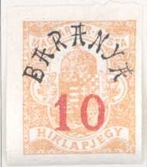
Value in the center
5 k blue 10 k blue 20 k blue 25 k blue 40 k blue 50 k blue Larger size, figures
(reduced size)
1 F black 2 F black on yellow
A postal stationary form with a 5 k design imprinted on it
similar to the telegraph stamps, reduced size; inscription
'Felado-veveny az alabbirt surgonyrol.'
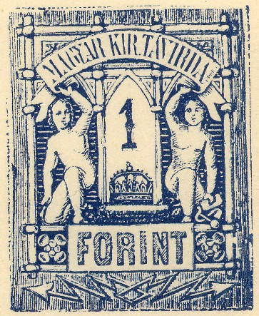
A Fournier forgery of the 1 F stamp, but in blue instead of
black. I presume Fournier did not actually sell this forgery, but
merely illustrate his pricelists with this image. This forgery
was found in a 'Fournier Album of Philatelic Forgeries'.
The values 1 k black and red, 1 k black and green (1874), 1 k black and brown (1880), 1 k green and brown (1892), 2 k black and red, 2 k black and brown (1880) and 2 k green and brown (1892) were issued.

6 k first issued in black and green, then black and brown in
1880, then brown and black in 1886 and finally in green and grey.
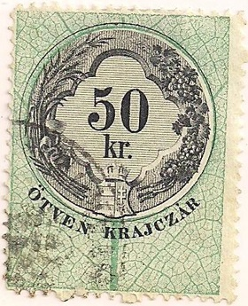


1868 issue


1880 issue


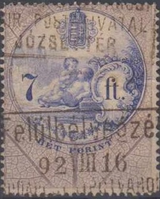
In 1868 the following values
were issued in black and green: 1/2 k, 1 k, 2 k, 3 k, 4 k, 5 k, 7
k, 10 k, 12 k, 15 k, 20 k, 25 k, 36 k, 50 k, 60 k, 75 k, 90 k, 1
F, 2 F, 2.50 F, 3 F, 4 F, 5 F, 6 F, 7 F, 10 F, 12 F, 15 F and 20
F.
1880: The colours for the 'krajczar' values were
changed to black and brown and the 'Forint' values to black and
red in 1880.
1892: Another colour change was done in 1892:
green and brown for the 'krajczar' values and blue and grey for
the 'Forint' values.
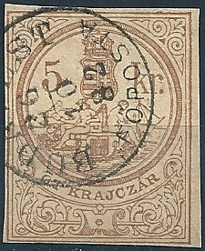
Possibly another cut from a document? Inscription "EGY KRAJCZAR 1 kr." in a circle with arms below:

The following values were issued: 1 f green, 2 f green and black, 4 f green and blue, 5 f red and green, 8 f green and violet, 10 f brown and green, 14 f brown and black, 20 f brown and violet, 24 f brown and blue, 30 f grey and green, 40 f grey and black, 50 f grey and violet, 72 f grey and blue, 1 K green and black, 1.20 K red and green, 1.50 K green and blue, 1.80 K green and brown, 2 K red and black, 4 K green and green, 5 K yellow and green, 6 K brown and brown, 8 K red and blue, 10 K yellow and black, 12 K brown and blue, 20 K blue and green, 24 K red and green, 30 K blue and black and 40 K grey and blue.
Reduced size
The following values exist: 2 f brown and blue, 4 f red and black, 6 f orange and grey, 8 f green and brown, 10 f brown and blue, 14 f blue and brown, 20 f red and brown, 24 f blue and blue, 26 f red and brown, 30 f grey and blue, 38 f olive and brown, 40 f red and brown, 50 f olive and green, 64 f red and blue, 72 f blue and brown, 1 K brown and blue, 1.20 K red and blue, 1.26 K grey and brown, 1.50 K red and grey, 1.80 K grey and black, 1.88 K grey and blue, 2 K red and brown, 2.50 K brown and blue, 3 K blue and brown, 4 K brown and green, 5 K violet and blue, 6 K green and olive, 8 K blue and green, 10 K red and green, 12 K blue and blue, 14 K brown and green, 20 K blue and blue, 30 K blue and green and 40 K red and brown.
1920 fiscal stamp 1 K
Later issues, reduced sized images with "1914"
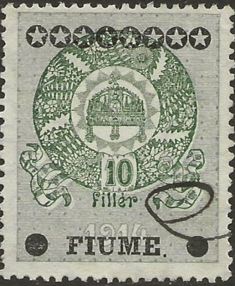
With overprint "FIUME" and star for Fiume.
(Reduced size)
Unidentified fiscal stamps 'TIZ FILLER' and
'MAGY-KIR-SZAMLA-BELYEG'. I presume these designs were printed on
documents directly?
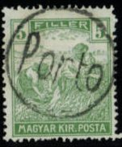
(Reduced size)
Inscription 'MAGYAR KIR POSTA'
2 f olive and red Inscription 'MAGYAR KIR POSTA', overprinted 'KOZTARSASAG' (='republic') (1918) 2 f olive and red Inscription 'MAGYAR POSTA', without crown

2 f olive and red
Value of the stamps |
|||
vc = very common c = common * = not so common ** = uncommon |
*** = very uncommon R = rare RR = very rare RRR = extremely rare |
||
| Value | Unused | Used | Remarks |
| 2 f | vc | vc | Magyar Kir Posta, watermark 'Wavy Crosses' |
| 2 f | c | c | overprinted 'KOZTARSASAG' |
| 2 f | vc | vc | 'Magyar Posta' |
These stamps exist with various local overprint, issued in 1919. Examples:
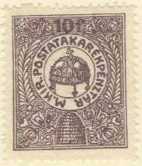
10 f lilac
Value of the stamps |
|||
vc = very common c = common * = not so common ** = uncommon |
*** = very uncommon R = rare RR = very rare RRR = extremely rare |
||
| Value | Unused | Used | Remarks |
| 10 f | vc | vc | |
These stamps exist with various local overprint, issued in 1919. Example:
1 f green and black 2 f green and black 5 f green and black 6 f green and black 10 f green and black 12 f green and black 50 f green and black 100 f green and black Surcharged
'20' on 100 f green and black (1915) Overprinted 'Koztarsasag' (1919) 50 f green and black

1 f green and red 2 f green and red 5 f green and red 6 f green and red 10 f green and red 12 f green and red 15 f green and red (1918) 20 f green and red 30 f green and red (1918) 40 f green and red (1920) 50 f green and red (1920) 120 f green and red (1920) 200 f green and red (1920) Overprinted 'Koztarsasag' (1919) 2 f green and red 3 f green and red 10 f green and red 20 f green and red 40 f green and red 50 f green and red
These stamps exist with various local overprint, issued in 1919.
2 f green and black 3 f green and black 10 f green and black 20 f green and black 40 f green and black 50 f green and black
Similar stamp in one color with 'ROMANIA ZONA DE OCUPATIE 1919'
overprint; this stamp was issued in Debreczen
Similar stamps with inscription 'HIVATILOS' are official stamps issued first in 1921, example:
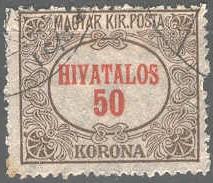
Hotel post stamp of 6 heler of the Bistra local courier between Szaszsebes and Bistra Colony in Transylvania, issued in 1907 in about 5.000 copies:
(Reduced sizes)
(Cut from an envelope issued in 1887, inscription 'MAGYAR KIRALYI
POSTA')
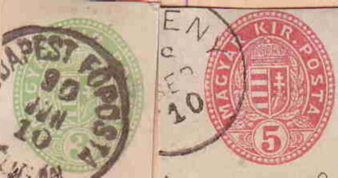
I have also seen the above postcard with straight inscription 'MAGYAR KIR. POSTA' instead of the curved 'Magy. kir posta' inscription.
Example:
I've seen so-called Friedl essays in the
above design in the values 1 kr red, 2 kr yellow, 3 kr green, 5
kr red, 10 kr blue, 15 kr black, 25 kr blue and 50 kr brown.

{kind=link}
{kind=link}
{kind=link}
{kind=link}
{kind=link}
{kind=link}